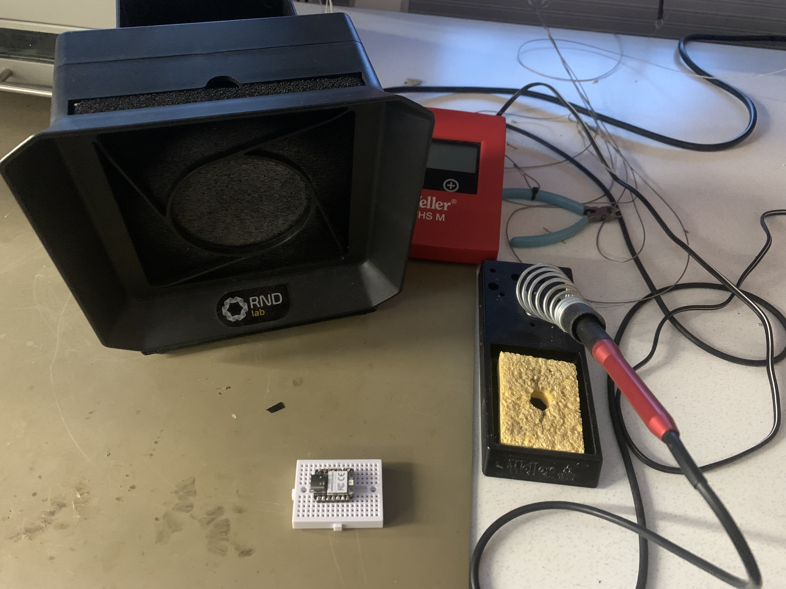
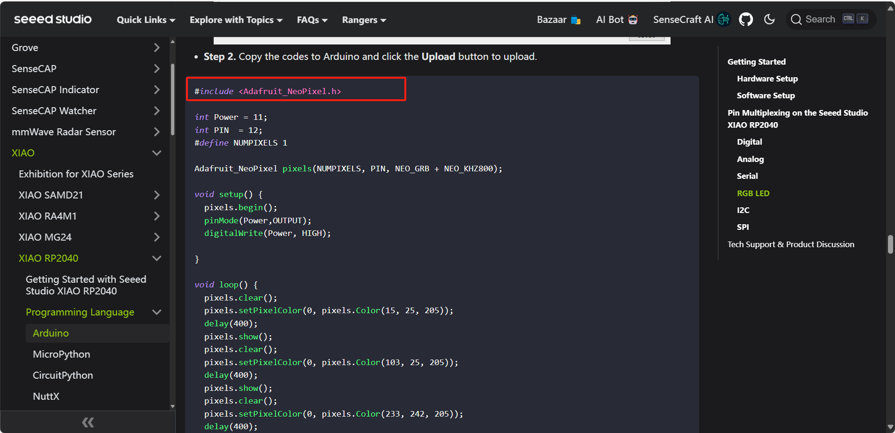

MCU
Arduino is one of the microcontroller(MCU). It is a small and low-cost computer integrated into a single chip, and it can control electronic devices. It consists of a processor(CPU), memory(RAM and flash storage), and input/output peripherals(e.g., GPIP pins, timers, and communication interfaces). We use MCU in digital fabrication because it is commonly used in embedded systems, where they provide specific functionality for various applications.
Microcontroller is very useful, which means it can be used in different fields like robotics, home automation systems, wearables, sensors, and IoT devices. MCU can also control motors, reader sensors, process data, and communicate with other devices. Arduino, Raspberry Pi Pico, ESP32 and the board I use below(XIAO-RP2040) are all MCUs.
Electronic concept
V, I, R is the knowledge I learned in high school, it often described by Ohm's law.
Voltage(V) is the potential difference between the positive and negative electrodes, like water pressure, with unequal ends, measured in volts(V).
Current(I) is the negative electrons flow towards the positive electrode due to the potential difference, forming an electric current. It is measures in amperes(A).
Resistence(R) is to prevent short circuits in electronic devices, the resistor provides resistance in the current to reduce the voltage. It is measured in ohms (Ω).
These three quantities are related by Ohm's law, which states: V = I * R.
XIAO board
To make the XIAO board work as a complete board, I need to solder the pins onto the XIAO board. To do this, the fab lab prepare me tools such as soldering iron, a damp sponge(clean the soldering iron), solder wire, and safety goggles(if necessary).
Waiting until the soldering iron is up to the temperature such as 350°C and then start. Place the pins on the board and aligned them, simultaneously heat the pins and the pads on the board ,solder them. (Make sure every bump stuff seperate from each other.) In this way, we combine these two parts sturdiely.
For safety, don't get burned(avoid touching the hot soldering iron), don't get toxic(work in a well-ventilated area or use a smoke extractor to split harmful gases). don't hurt the lab(Keep the soldering iron away from flammable materials, and ensure the work surface is clean and stable.)
Finally, waiting for the board to cool down then clean and organize everything.

Arduino
#define is always used to define constants or macros in code. For exampple, #define LED_PIN 13 assigns pin 13 to the constant "LED_PIN".
setup() runs only once since the Arduino resets or starts. It is used to initial settings, such as setting pin modes or starting serial communication.
loop() runs repeatedly unlike setup(). It contains the main codes that needs to run over and over, like reading sensors or controlling outputs or print the data.
pinMode() sets the mode of a pin(input or outout). For example, pinMode(LED_PIN, OUTPUT) set the pin as an output.
digitalWrite() can writes a HIGH or LOW value to a pin, used to control outputs like LEDs, the example blink shows a clear usation of it.
Variables: Arduino supports different types like int, float, and char to store or use of data.
if...else: These conditional statements allow the code to make decisions, and run different execute in different situation. For example, if (condition) {} runs a block if true, otherwise, else {} runs.
NEOPIXEL
I learned how to start Seeed XIAO RP2040 here (connect/ install/ choose the board and port). Then I use example in this website to apply the library.
The process of the library application is already tricky for me, I need to fill Additional Boards Manager URLs in File > Preferences. Install and download the Raspberry Pico in Tools-> Board-> Boards Manager... choose the port as recommended and upload the example code in reference
I use #include
